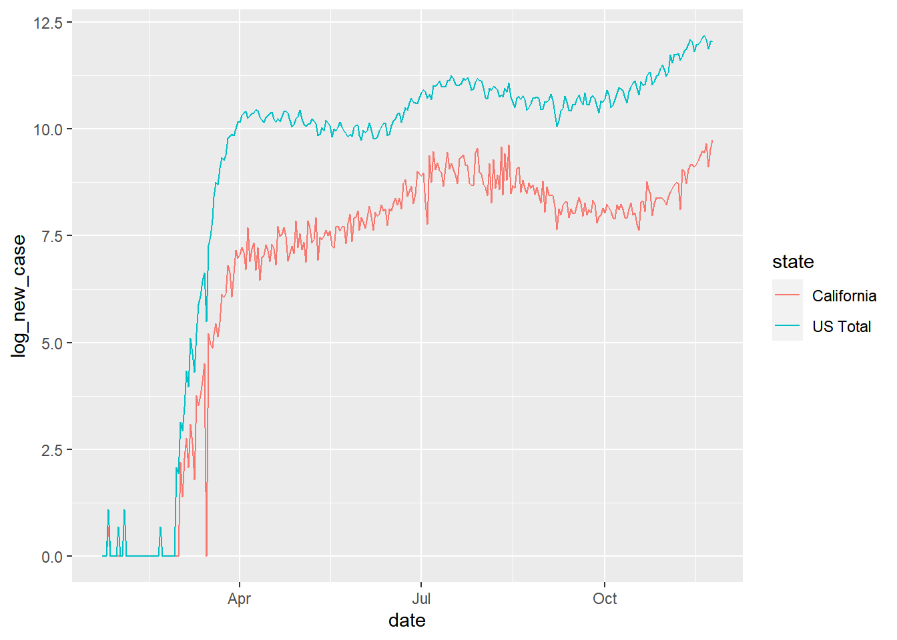
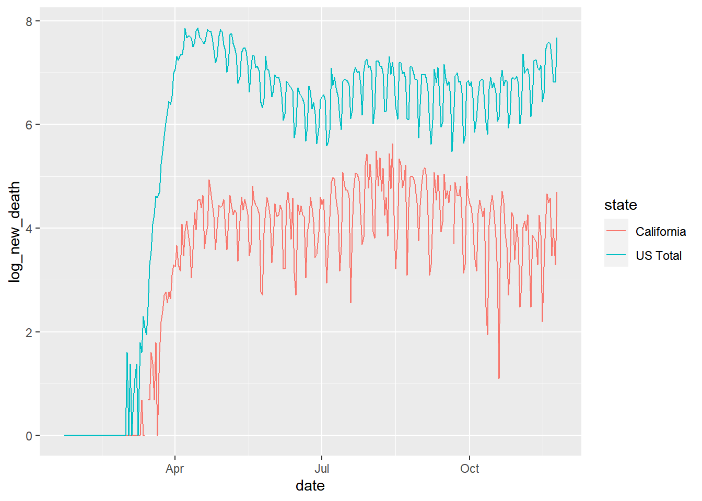

The objectives of this project is to explore 1) whether the COVID-19 pandemic is ending (i.e., are the numbers of new cases/deaths decreasing) specifically in the United States and 2) whether the current lockdown policies are effective against COVID-19 transmission (i.e., whether there are significant differences between the numbers of new cases/deaths pre- versus post-lockdown.
The data being used for the project is the daily data of cumulative confirmed cases of COVID-19 and cumulative deaths from COVID-19 in the United States, by county and since Jan 22nd, 2020. It is released and currently being updated on daily basis by Johns Hopkins University Center for Systems Science and Engineering.
The original dataset can be found in JHU CSSE official github repository for COVID-19 data: https://github.com/CSSEGISandData/COVID-19. There are 3338 rows and 311 columns in the raw data of cases, 3338 rows and 312 columns in the raw data of deaths.
First, the unneeded variables (for example, “Country” is useless in this project because all the interested data is for the United States) is dropped from the dataset. The original dataset also includes cases and deaths in places outside the United States (e.g., the diamond princess cruise ship); as the populations on cruise ships are poorly defined and are relatively small, they are dropped from the dataset. The data for American territories are also dropped for similar reasons. Missing values are checked and no missing value is observed for daily reported cases and deaths.
The case and death datasets are then 1) reshaped from long to wide and 2) combined for easier interpretation. Variables are renamed accordingly. The county level numbers within each state are added up to get the state level data, and state level numbers are added up to get the US national level data, listed as “US total”. The cumulative case/death of the previous date is subtracted from that of the current date to calculate the daily new case/death. Because of that, the data of very first recorded date (Jan 22th) is invalid and dropped. The log transformation is used for better visualization in figures; when the log transformation produced -Inf due to 0s in the raw data, the -Infs are replaced by 0s for easier processing.
Specially, the JHU COVID-19 datasets do not include the abbreviations of US states. As such, a third-party dataset which converts full names of US states to their standard abbreviations was found in Github and used in this project: https://github.com/jasonong/List-of-US-States/raw/master/states.csv. Finally, the dataset is sorted according to state name and date. There are 16271 rows and 10 columns in the final processed version of the dataset.
| state | avg_new_case | max_new_case | today_new_case | avg_new_death | max_new_death | today_new_death |
|---|---|---|---|---|---|---|
| Alabama | 772 | 3832 | 2785 | 11 | 81 | 13 |
| Alaska | 94 | 748 | 590 | 0 | 13 | 13 |
| Arizona | 1000 | 4877 | 4544 | 21 | 172 | 51 |
| Arkansas | 483 | 2312 | 2122 | 8 | 158 | 18 |
| California | 3730 | 16990 | 16990 | 61 | 278 | 109 |
| Colorado | 672 | 6439 | 4150 | 9 | 122 | 50 |
| Connecticut | 349 | 5271 | 540 | 16 | 204 | 10 |
| Delaware | 106 | 663 | 453 | 2 | 69 | 5 |
| District of Columbia | 66 | 335 | 119 | 2 | 19 | 1 |
| Florida | 3105 | 15300 | 8555 | 59 | 276 | 72 |
| Georgia | 1481 | 31605 | 3676 | 30 | 480 | 6 |
| Hawaii | 58 | 354 | 60 | 1 | 14 | 0 |
| Idaho | 309 | 1786 | 1640 | 3 | 35 | 8 |
| Illinois | 2196 | 15415 | 9469 | 40 | 247 | 150 |
| Indiana | 998 | 8322 | 5625 | 18 | 150 | 103 |
| Iowa | 709 | 5484 | 2992 | 7 | 48 | 48 |
| Kansas | 473 | 7707 | 337 | 5 | 84 | 0 |
| Kentucky | 530 | 3816 | 2606 | 6 | 33 | 17 |
| Louisiana | 731 | 4743 | 3243 | 21 | 129 | 39 |
| Maine | 35 | 255 | 255 | 1 | 12 | 12 |
| Maryland | 604 | 2910 | 1667 | 15 | 171 | 33 |
| Massachusetts | 688 | 3206 | 2576 | 34 | 302 | 20 |
| Michigan | 1133 | 13162 | 6782 | 30 | 241 | 154 |
| Minnesota | 922 | 8689 | 6416 | 11 | 72 | 38 |
| Mississippi | 471 | 1972 | 665 | 12 | 67 | 53 |
| Missouri | 927 | 9646 | 3967 | 12 | 189 | 189 |
| Montana | 187 | 1642 | 1123 | 2 | 37 | 16 |
| Nebraska | 378 | 3440 | 0 | 3 | 43 | 0 |
| Nevada | 453 | 2871 | 2871 | 7 | 38 | 24 |
| New Hampshire | 60 | 529 | 362 | 2 | 22 | 1 |
| New Jersey | 1022 | 4669 | 4275 | 55 | 483 | 47 |
| New Mexico | 281 | 3665 | 2099 | 5 | 33 | 28 |
| New York | 1977 | 11434 | 4881 | 112 | 1273 | 23 |
| North Carolina | 1115 | 4514 | 3100 | 17 | 67 | 35 |
| North Dakota | 242 | 2270 | 1004 | 3 | 37 | 37 |
| Ohio | 1211 | 11885 | 8536 | 20 | 147 | 80 |
| Oklahoma | 588 | 4507 | 2736 | 5 | 26 | 15 |
| Oregon | 219 | 1502 | 1000 | 3 | 21 | 21 |
| Pennsylvania | 1064 | 7010 | 6355 | 32 | 341 | 78 |
| Puerto Rico | 158 | 1332 | 348 | 3 | 21 | 6 |
| Rhode Island | 168 | 2572 | 851 | 4 | 114 | 16 |
| South Carolina | 682 | 2665 | 1678 | 14 | 80 | 25 |
| South Dakota | 244 | 2020 | 1011 | 3 | 53 | 2 |
| Tennessee | 1127 | 7951 | 1366 | 14 | 89 | 71 |
| Texas | 3849 | 21791 | 19481 | 69 | 678 | 196 |
| US Total | 40987 | 195469 | 172921 | 846 | 2603 | 2146 |
| Utah | 593 | 5352 | 2701 | 3 | 17 | 11 |
| Vermont | 12 | 149 | 48 | 0 | 4 | 1 |
| Virginia | 728 | 3242 | 2544 | 13 | 96 | 37 |
| Washington | 492 | 6277 | 3482 | 9 | 45 | 35 |
| West Virginia | 137 | 1153 | 969 | 2 | 26 | 15 |
| Wisconsin | 1259 | 16956 | 6748 | 11 | 114 | 114 |
| Wyoming | 98 | 1262 | 528 | 1 | 26 | 0 |


Based on the table and figures, we conclude that the pandemic is still far from ending in the United States in terms of cases, but is getting better in terms of deaths. Although the recent daily new cases have once dropped significantly from the July and August peak, the time series figure suggests the new cases are having an increasing trend as the winter flu season comes in, and even though the death numbers are milder, the daily new deaths still do not have a clear declining trend yet. The pre-post comparison in geoplot figure also points out that the current lockdown policies are not quite effective against the virus transmission in this pandemic so far, but may have shown some effects in controlling the deaths due to COVID-19.